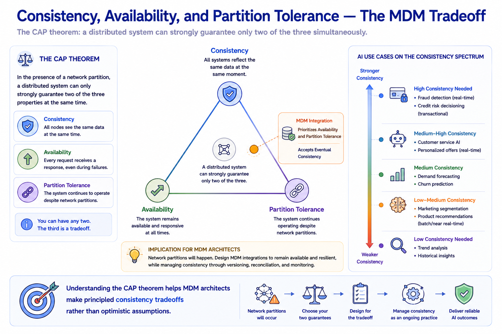
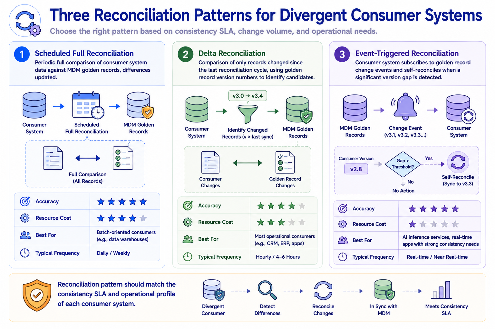
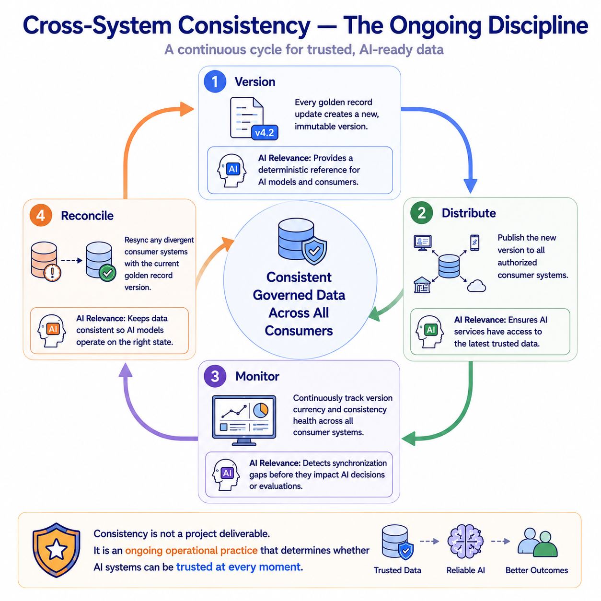

Cross-System Consistency
Module support notes
The CAP Theorem and MDM Consistency Tradeoffs
The CAP theorem — the well-established distributed systems principle that no distributed system can simultaneously guarantee strong consistency, full availability, and partition tolerance — has direct implications for MDM integration architecture. MDM programs must make explicit tradeoffs between these properties based on their operational requirements and AI use case profiles.
Systems that prioritize availability and partition tolerance — the practical choice for most enterprise MDM integration environments — accept eventual consistency as the achievable standard. Understanding this constraint prevents architects from designing integration systems that implicitly assume strong consistency and then fail to deliver it in production, producing the kind of intermittent AI data quality failures that are notoriously difficult to diagnose.
Note
Understanding the CAP theorem helps MDM architects make principled consistency tradeoffs rather than optimistic assumptions. Most enterprise MDM environments land in the availability and partition tolerance zone, which means eventual consistency is the design target — not strong consistency. AI use cases that require strong consistency need specific architectural accommodations, such as read-your-writes guarantees or synchronous replication, that come at a real performance and complexity cost.

Reconciliation Patterns for MDM Consumer Systems
Reconciliation — the process of identifying and resolving divergences between consumer system data and the current MDM golden record — is the operational backstop that prevents temporary consistency failures from becoming permanent. The right reconciliation pattern depends on the consistency SLA and operational profile of each consumer.
- Scheduled Full Reconciliation — periodic full comparison against golden records; high accuracy, high resource cost; appropriate for batch-oriented consumers with low-frequency data access
- Delta Reconciliation — comparison of only records changed since the last cycle using golden record version numbers; more efficient; appropriate for most operational consumers
- Event-Triggered Reconciliation — consumer subscribes to golden record change events and self-reconciles when a significant version gap is detected; most efficient; appropriate for AI inference services with strong consistency requirements
Tip
Match the reconciliation pattern to the consistency SLA and operational profile of each consumer — not to what is easiest to implement uniformly. AI inference services should use event-triggered reconciliation because their consistency requirements are tightest and their self-reconciliation can be automated. Applying scheduled full reconciliation to an AI inference service because it is familiar from batch integration will produce consistency windows that the inference use case cannot tolerate.

Consistency is not a project deliverable — it is an ongoing operational practice sustained through a continuous cycle of versioning, distribution, monitoring, and reconciliation.
